O produto está pronto para o mercado internacional?
Você já perguntou para um artista se o seu quadro está pronto? Nem se arrisque. Talvez você acabe com tinta no cabelo. Uma obra quase sempre parece…
Ler artigo →O que precisa mudar dentro da empresa para crescer fora
Antes de qualquer coisa, quero fazer um convite. Use o seu discernimento. Leia, observe, compare e avalie tudo aquilo que chega até você. Inclusive este…
Ler artigo →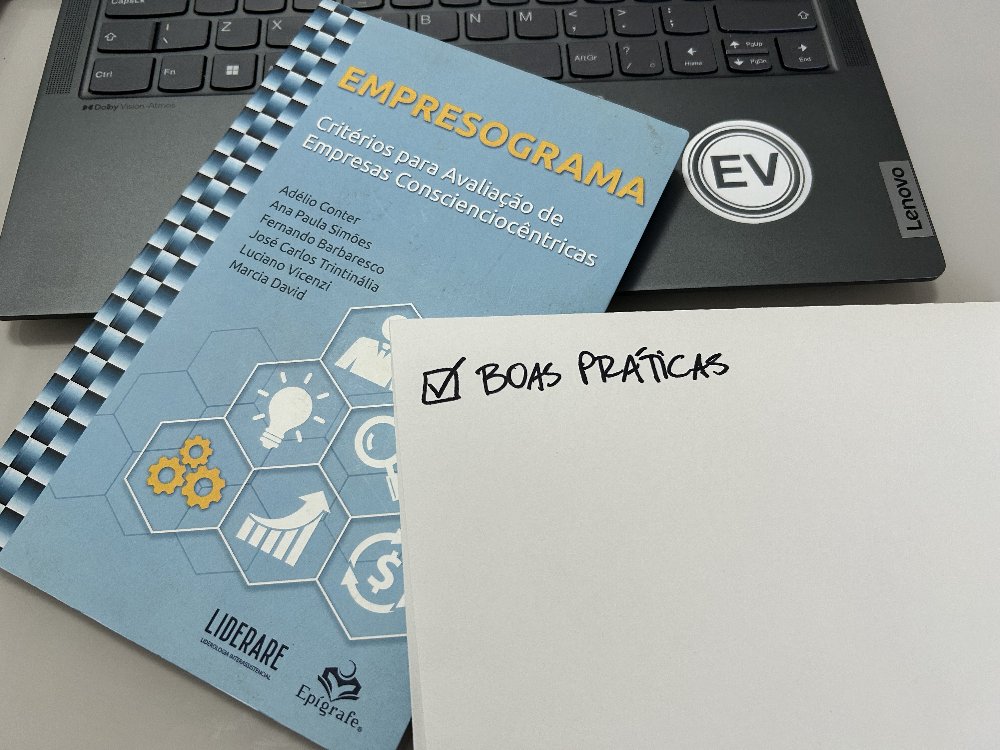
Boas práticas começam por quem as pratica
O que significa, afinal, adotar boas práticas de mercado e de governança? Quando pensamos em empresas, é comum imaginar estruturas, processos, políticas,…
Ler artigo →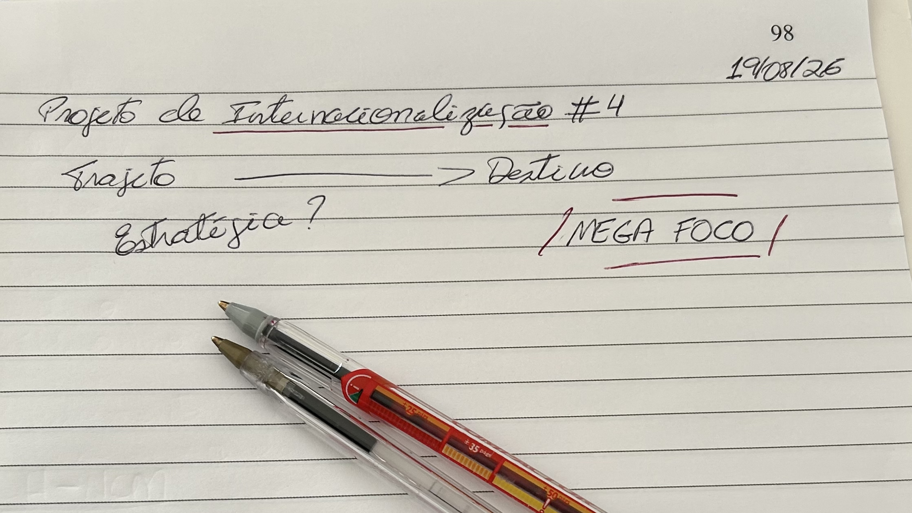
Exportação é consequência. Internacionalização é estratégia
Quando falamos em internacionalização, talvez seja importante diferenciar o destino do trajeto. Ou, em outras palavras, diferenciar o propósito da jornada…
Ler artigo →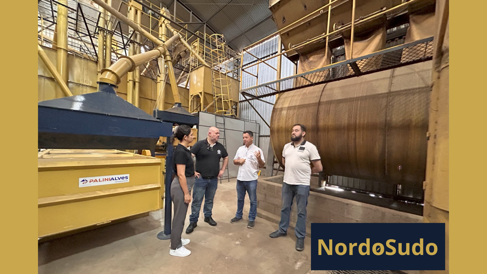
O planejamento e a continuidade das empresas
Recentemente, durante um estudo sobre longevidade das empresas, encontrei uma afirmação que chamou minha atenção: "Uma empresa sem planejamento de…
Ler artigo →
Networking internacional
Networking internacional O que é networking? A palavra pode ser traduzida como “rede” e, numa tradução mais livre, como uma rede de trabalho. Daí…
Ler artigo →Como encontramos oportunidades
Mas, afinal, o que é uma oportunidade? É algo que pode nos gerar resultado? É algo em que temos uma vantagem estratégica ou competitiva? Na nossa opinião,…
Ler artigo →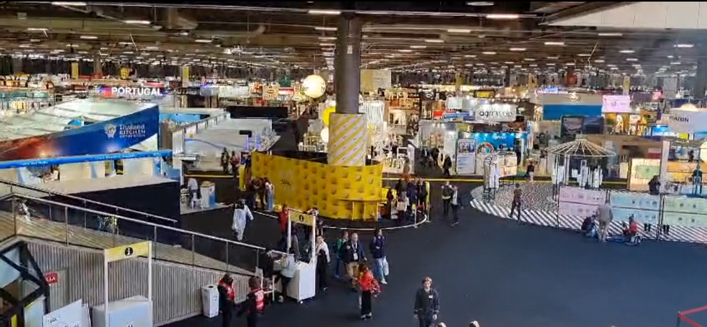
Porque feiras continuam importantes
Em um mundo em que a inteligência artificial consegue automatizar processos, correlacionar fatos, ajudar a enxergar cenários e fazer tantas outras coisas…
Ler artigo →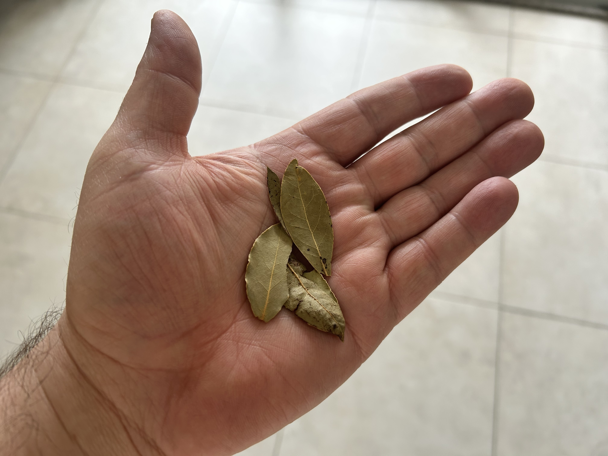
Quando o sucesso começa a nos prender
Águas passadas não movem moinhos. A frase é antiga, mas talvez nunca tenha sido tão atual para o mundo dos negócios. Uma empresa pode passar anos…
Ler artigo →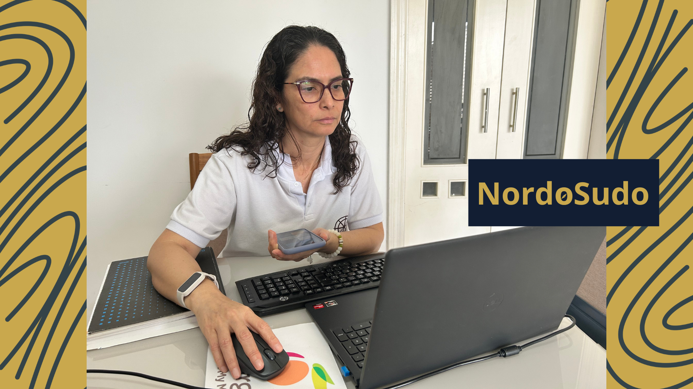
Os dados não decidem por nós
Em um texto anterior, falamos sobre como toda pesquisa começa com uma pergunta, e sobre como um estudo de mercado vai muito além de identificar clientes:…
Ler artigo →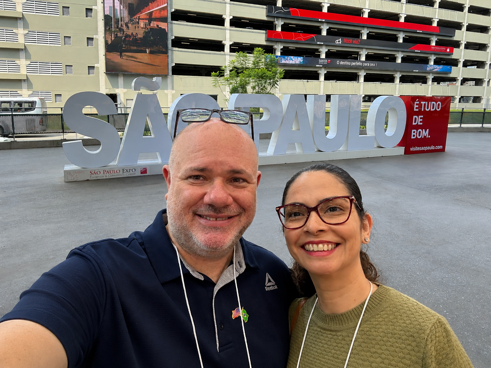
Os fins justificam os meios? Reflexões sobre negócios, propósito e desenvolvimento humano.
Ao longo da história, uma pergunta atravessou diferentes áreas do conhecimento e continua atual no mundo dos negócios: os fins justificam os meios? Em…
Ler artigo →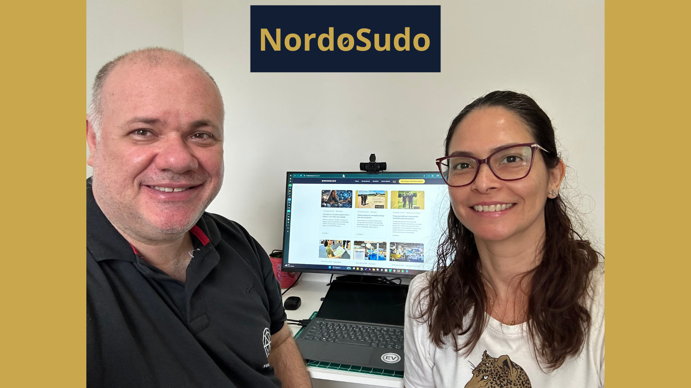
Os bastidores da Nordosudo
Toda empresa nasce para resolver um problema. Mas acreditamos que ela também nasce para materializar um propósito. Foi por isso que criamos a Nordosudo.…
Ler artigo →O Comércio Exterior sempre viveu o futuro. A IA é mais um capítulo.
Quando comecei no Comércio Exterior, eu digitava Guias de Importação e Certificados FORM A em uma máquina de escrever. Depois vi o SISCOMEX nascer.…
Ler artigo →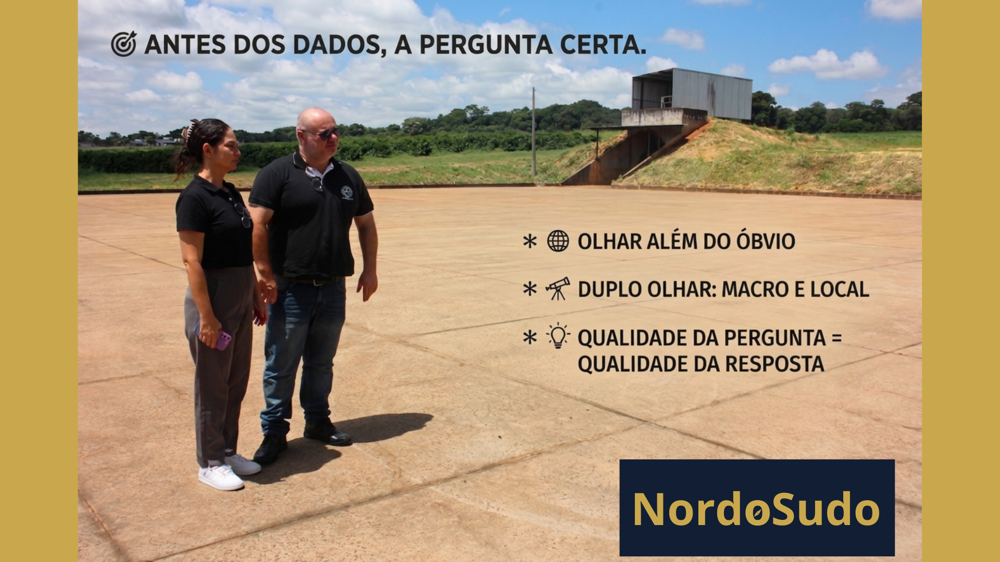
Toda pesquisa (de mercado) começa com uma pergunta
Quando falamos em estudo de mercado, normalmente encontramos uma definição semelhante a esta: "Um estudo de mercado é uma investigação para coletar e…
Ler artigo →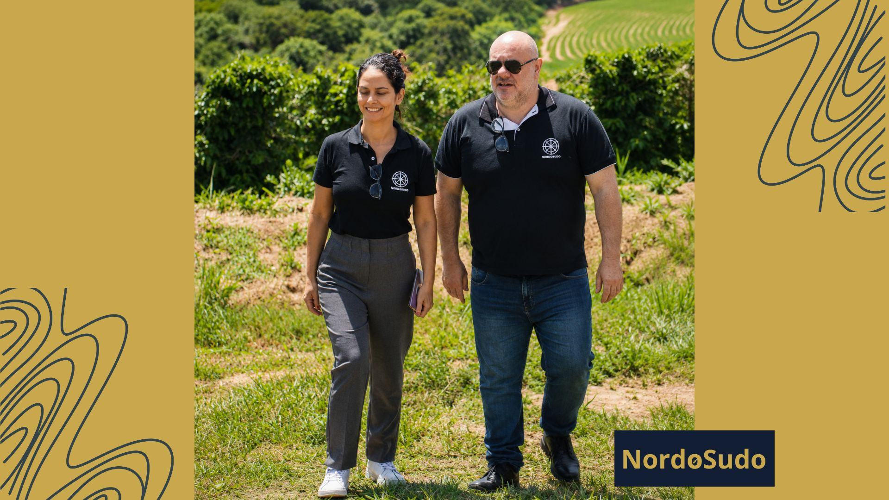
O que aprendemos conversando com fabricantes brasileiros
A realidade pode ser muito diferente daquela que imaginamos atrás de uma mesa de escritório. Depois de mais de 25 anos trabalhando no chão de fábrica, aprendi que muitas respostas só aparecem quando estamos presentes, conversando…
Ler artigo →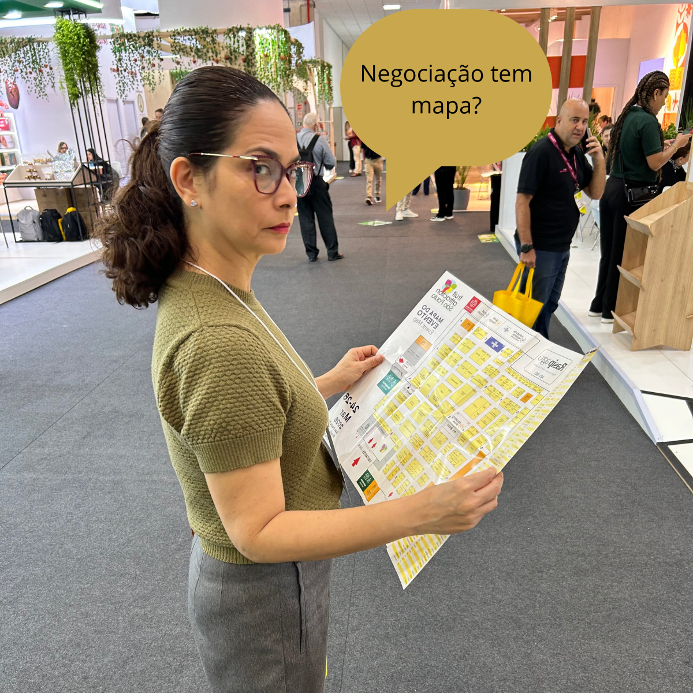
Uma negociação internacional que nunca esqueci
Hoje eu havia pensado em compartilhar uma negociação internacional bem-sucedida da qual participei. Mas, no meio do caminho, resolvi contar uma história diferente. Uma negociação…
Ler artigo →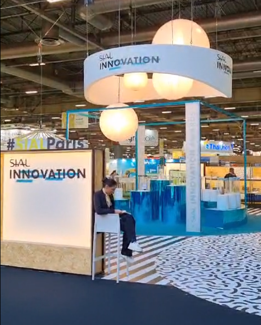
Como escolher o primeiro mercado internacional?
Uma das frases que mais escuto é: "O importante é fazer a primeira venda." Nós discordamos.
Ler artigo →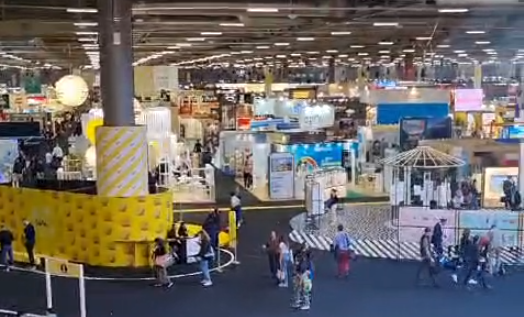
Nem todo produto excelente vende no exterior. E isso não é um problema.
O que define a excelência de um produto? Quando falamos em excelência, é comum pensarmos em qualidade, tecnologia, design ou inovação. Tudo isso é importante, mas, para mim,…
Ler artigo →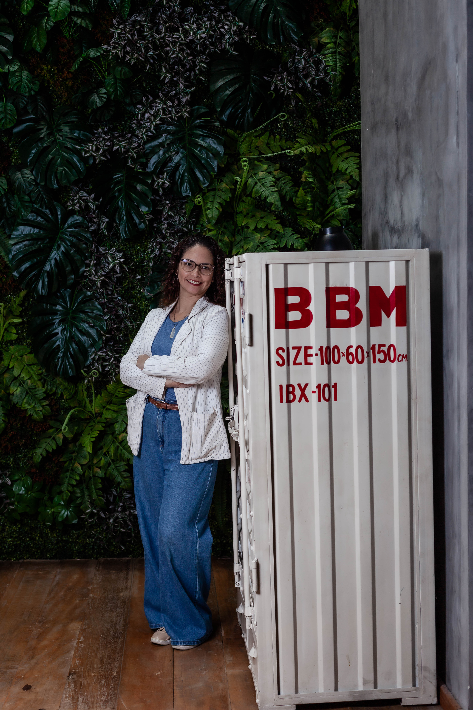
Mentoria Elas Exportam: Propósito e Internacionalização
Esta semana comecei uma nova etapa como mentora do Programa Elas Exportam, da ApexBrasil. Confesso que fiquei pensando bastante no que essa oportunidade representa. Mais do que…
Ler artigo →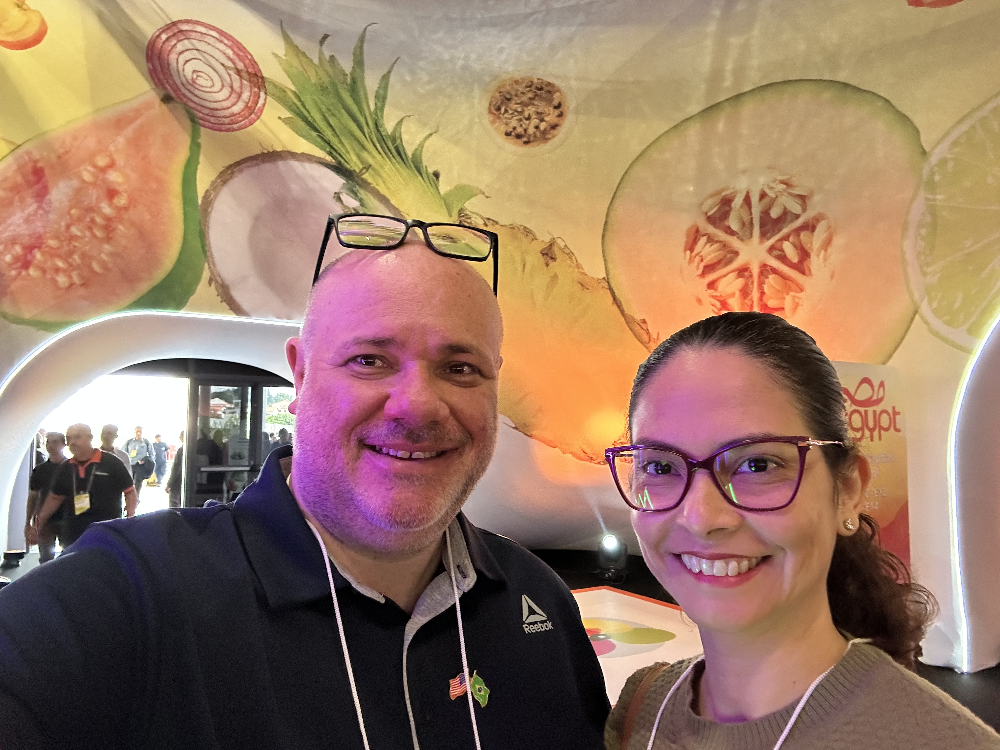
Exportar é vender. Internacionalizar é desenvolver mercados
Exportar é vender. Internacionalizar é desenvolver mercados. Quando pensamos em exportação, normalmente imaginamos um produto atravessando uma fronteira. Mas exportar é apenas uma…
Ler artigo →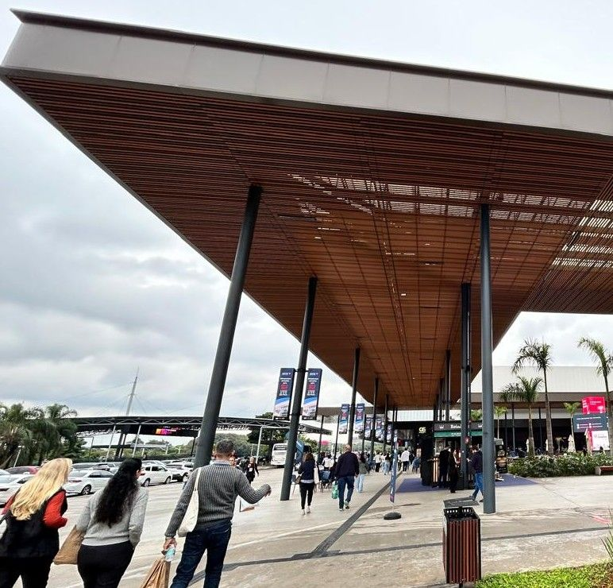
O que ninguém vê no desenvolvimento de mercados
Mercados. Eles não existem de verdade; a realidade é feita de pessoas. O comportamento das pessoas deixa rastros, e a isso se denomina mercado. Palavras impessoais foram criadas…
Ler artigo →Você consegue encontrar compradores no exterior para o meu produto?
"Vânia, você consegue encontrar compradores no exterior para o meu produto?" Resolvi falar dessa pergunta hoje porque ela continua chegando para mim com muita frequência E a minha…
Ler artigo →Só falta encontrar um comprador internacional
Essa é uma das frases que mais ouvimos de empresas que querem começar a exportar. Mas será que esse é realmente o primeiro passo?! Muitas empresas acreditam que para fazer uma…
Ler artigo →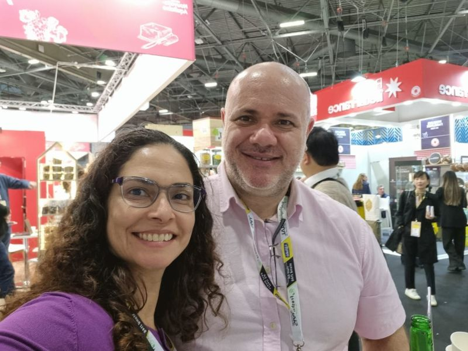
A maioria das empresas faz a pergunta errada
A maioria das empresas faz a pergunta errada Ao longo de quase 30 anos trabalhando com comércio exterior, ouço algumas perguntas que se repetem com frequência: “Como faço para…
Ler artigo →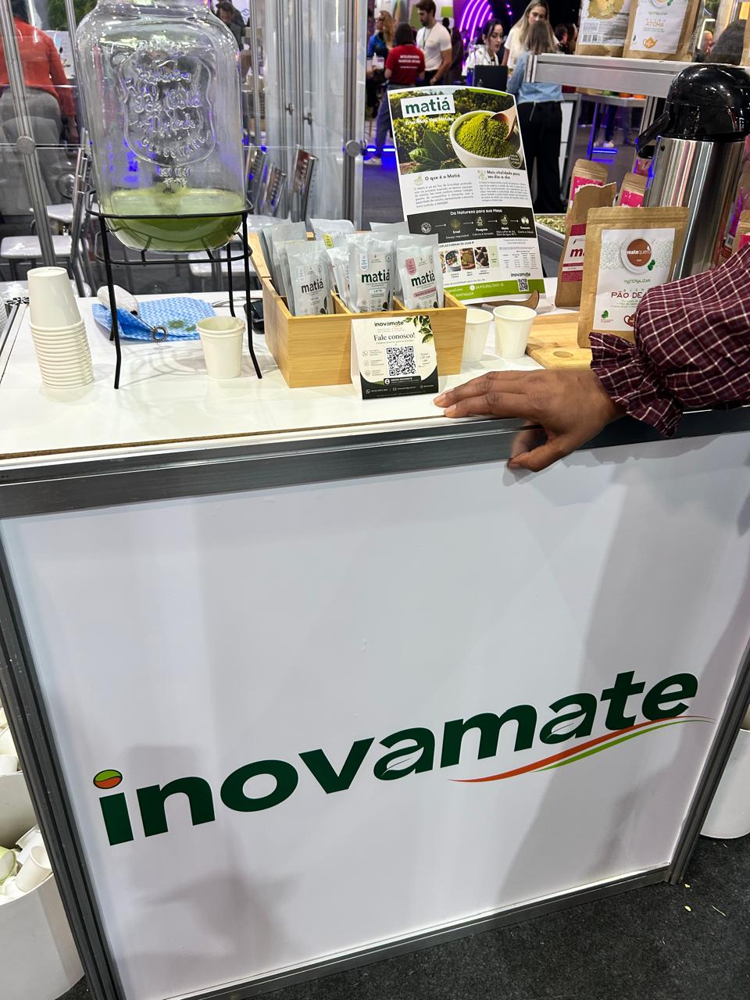
O que realmente nos chamou a atenção na Naturaltech 2026
O que realmente nos chamou a atenção na NaturalTech 2026 — e por que isso importa para empresas que querem crescer. Proteína em praticamente todas as categorias. *Clean Label*…
Ler artigo →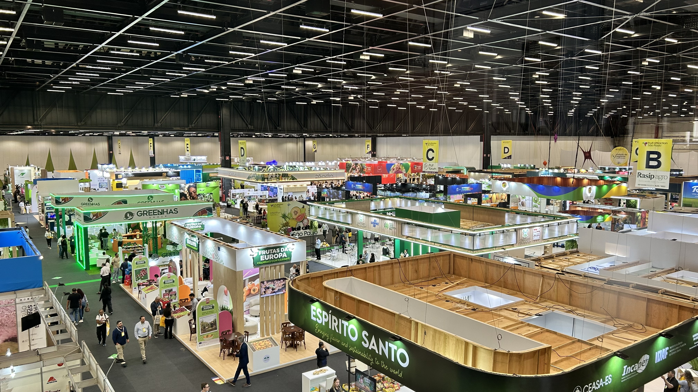
O que uma feira realmente ensina
O que uma feira realmente ensina? Não é só olhar produto. É muito mais do que isso. É ver as pessoas pessoalmente. Interagir, trocar duas palavras, perceber a reação de alguém…
Ler artigo →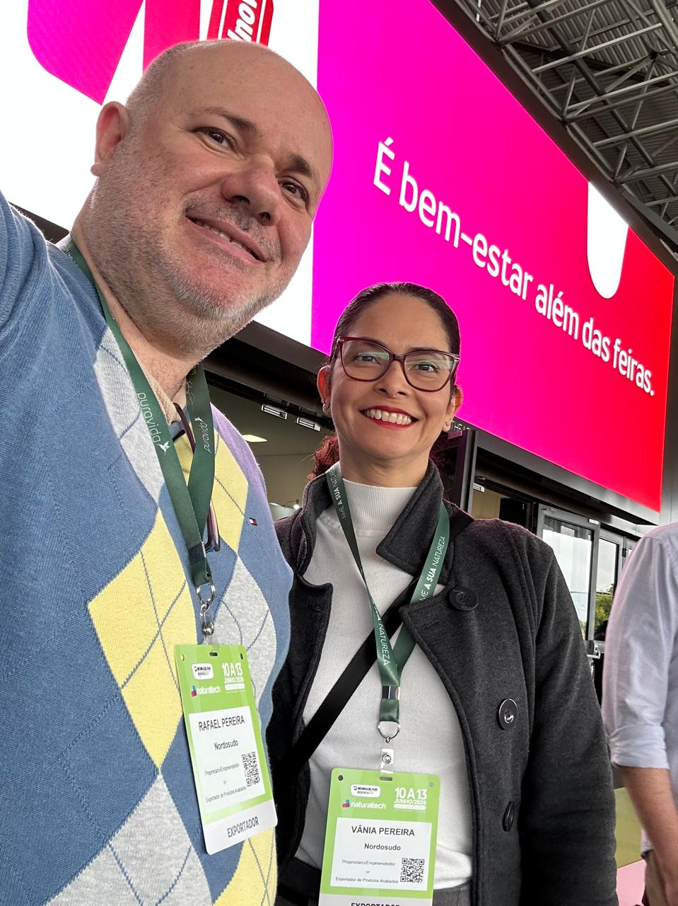
Depois de um longo tempo
Depois de um longo tempo sem escrever nada por aqui, decidi voltar. Percebi que tenho muito a compartilhar sobre comércio exterior, internacionalização e as mudanças que estamos…
Ler artigo →